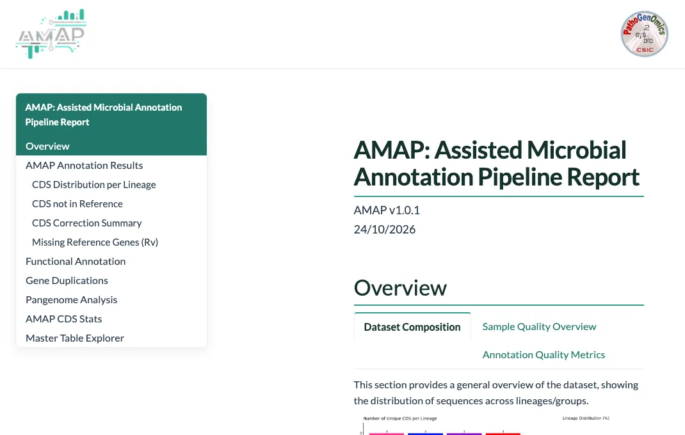

Case 2
Perfect match
Same start, same end, same strand and the same length as the aligned protein.
AMAP keepsBakta's call, named after the protein: Rv0002, dnaN.
AMAP annotates assembled genomes with Bakta, aligns a trusted reference proteome onto them with miniprot, and settles every disagreement: late starts, split genes, calls that are not genes, genes Bakta missed. Built for the M. tuberculosis complex, and for any species with a reference.
What AMAP keeps
The first 12.4 kb of M. tuberculosis CDC1551, against H37Rv. Twelve calls by Bakta, the eight H37Rv proteins aligned there, and the eight genes AMAP keeps. Point at a gene.Tap a gene.
Start here
Every tool AMAP calls lives in one container image, so Nextflow and a container engine are all you install. Four steps; once the image is in, the slowest takes minutes.
Nextflow needs Java 17 or newer, and conda brings both. Then Docker on a laptop, or Singularity or Apptainer on a cluster.
$ conda create -n nextflow-env -c conda-forge -c bioconda nextflow $ conda activate nextflow-env $ docker info --format 'Docker can give containers {{.NCPU}} CPUs and {{.MemTotal}} bytes'
The last line fails if Docker is not running, and says what a container may use; Docker Desktop's 8 GB prints as 8217014272 bytes. Under 8 GB? Raise it in Docker Desktop, Settings, Resources. On Apple Silicon the image runs emulated; every timing on this site was measured that way. Installation, in full.
The test profile annotates the H37Rv genome inside the image, without eggNOG: no data, no database. Run it in an empty folder; it downloads only the image and the pipeline, and writes amap-test/ and work/. It took 3 minutes on a MacBook Pro with an M4 Pro, once the image was in.
$ nextflow run PathoGenOmics-Lab/AMAP -profile docker,test \ --skip_functional_annotation --outdir amap-test
If the whole chain works, it ends like this:
The first run pulls the image: about 3.4 GB compressed, 12 GB on disk, once.
A sample sheet with two columns and a real tab between them, then two commands: a check that takes seconds, and the run. Pick what you have and copy them.
sampleId fasta CDC1551 /data/cdc1551.fna Erdman /data/erdman.fna
Paths are absolute, or relative to where you launch Nextflow. Sample IDs take letters, digits and underscores. Preparing inputs.
Check it first: the same command, with --validate_only
$ nextflow run PathoGenOmics-Lab/AMAP \ -profile docker \ --tsv samples.tsv \ --validate_only
Seconds per genome. A check that fails stops and prints its whole report. One that passes prints nothing, warnings included: its verdict is in results/, here for the tutorial's genome:
Then run it
$ nextflow run PathoGenOmics-Lab/AMAP \ -profile docker \ --tsv samples.tsv
-profileEvery tool runs inside the AMAP image, through Docker.--tsvYour sample sheet: sampleId and fasta, tab separated.First time? The tutorial runs one real genome, with numbers to check yours against. Every option is in Parameters.
Open results/amap_report.html first: every run writes it (the test of step 2, in amap-test/), and it answers the first questions genome by genome. A full run, with eggNOG, also writes results/, the whole run on one page. The corrected files are listed under What you get.
What AMAP decides
Every Bakta call is compared with where the reference proteins align, on its strand and contig. That puts it in one of four cases, numbered as the code numbers them: 2 and 3 agree, 4 conflicts, 1 has no reference. A reference gene with no call at all is a fifth. These are real genes of CDC1551: point attap one for its coordinates.
Five outcomes, on real genes of CDC1551
Five cards: swipe for the next.
Same start, same end, same strand and the same length as the aligned protein.
AMAP keepsBakta's call, named after the protein: Rv0002, dnaN.
The same coordinates, but the alignment's length differs: H37Rv's fhaA has 6 residues that CDC1551's lacks.
AMAP keepsBakta's call, named Rv0020c.
Bakta's dnaA starts 33 bp after the aligned protein does. Where the two disagree, the reference wins by default.
Bakta calls two short genes where H37Rv's Rv0007 aligns end to end. The reference is longer than either call, so it wins.
Bakta's call is 3,303 bp longer than the alignment, which stops before the end of its protein. A call longer by more than 550 bp wins over an alignment that is not complete.
AMAP keepsthe reference's coordinates, 1 to 1,524.one gene, 9,914 to 10,828.Bakta's call, 2,267,753 to 2,272,573, named Rv2024c.
Nothing from H37Rv aligns to these four calls: a stretch CDC1551 has and H37Rv lacks. None is a call Bakta is known to make wrongly, and none matches the H37Rv genome at 80% identity.
Nothing aligns here either, but the call is covered end to end by one that Bakta makes on H37Rv itself and that the curated annotation does not have.
AMAP keepsall four, under Bakta's locus tags.nothing: the call is dropped.
H37Rv has a 71-residue protein, Rv0031, between two of Bakta's calls, and Bakta called nothing there. No gene accounts for the alignment.
AMAP keepsthe gene, put back at the alignment: 33,526 to 33,738.
Then come the harder ones: a protein placed on its paralog's locus, proteins too small for miniprot, genes a contig end cuts, frameshifts and lost stops, and the real copies of a gene. How it works, step by step.
Does it work?
Seven genomes, scored against genes AMAP did not annotate: the reference's own, carried onto each genome by a whole-genome alignment. AMAP finds every unchanged gene at exactly its coordinates, under its name; Bakta alone, scored the same way, finds 67 to 90% of them.
100%of unchanged genes found at exactly their coordinates, in all seven genomes. Bakta alone: 67 to 90%.
Genes found per genome, by AMAP and by Bakta alone
Each bar is AMAP; shaded up to the line, what Bakta finds alone. Scores of tests/benchmark, which anyone can rerun in the container; the truth comes from the references and minimap2, never from AMAP.
The pipeline
Stations are the processes of main.nf; lines are what travels between them. Pick a station, or flip an option to see what a run leaves out.
Every process of main.nf, in the order it runs them
Scroll sideways to follow the lines.
What you get
Everything lands under results/, one folder per step. Typing puts the lineage in front of each sample, so CDC1551 becomes L4_CDC1551; --skip_typing leaves it out. Outputs lists every file.
AMAP/{lineage}_{sample}/*-AMAP.gff3 · .gbk
The corrected annotation. Pseudogenes and genes a contig end cut are marked the way NCBI marks them.
after a full runAMAP/{lineage}_{sample}/*-AMAP.clean.faa
The proteins without pseudogenes or internal stops: what orthology, phylogenomics and dN/dS tools expect.
after a full runAMAP/{lineage}_{sample}/*-AMAPmastertable.tsv
One row per gene: coordinates, Bakta, eggNOG and, for the tuberculosis complex, Mycobrowser.
after a full runCDS_CASES/{lineage}_{sample}/
Every decision: a table per case, the reference genes Bakta missed, and the counts of each.
after every runamap_report.html · final_report.html
The run by question, from every run; and the whole run on one page, from a full one. Both open offline and travel by email.
after every run, and a full onepipeline_info/
The check's verdict, and the exact tool versions and parameters of the run, for your methods section.
after every runThe bars take the colours of the pipeline's lines: the sample's alone for what every run writes, joined by eggNOG's for what only a full run writes.
Lines from real runs on CDC1551; the annotation comes from the genome cut into 40 contigs.
contig_4 AMAP CDS 164980 165406 . - 0 ID=L4_CDC1551d_Rv0354c;…;Dbxref=AMAP_ids:Rv0354c;pseudo=true;Note=frameshift or lost stop codon: its frame runs on 41 residues past the end of the reference protein contig_9 AMAP CDS 4160 4591 . - 0 ID=L4_CDC1551d_Rv1239c;…;Dbxref=AMAP_ids:Rv1239c;partial=true;end_range=4591,. contig_10 AMAP CDS 101478 102146 . + 0 ID=L4_CDC1551d_Rv1239c_2;…;Dbxref=AMAP_ids:Rv1239c;partial=true;end_range=102146,.
Notepartial=true cut by the end of its contig, with the open end in end_range or start_range CDS complement(164980..165406)
/locus_tag="L4_CDC1551d_Rv0354c"
/db_xref="AMAP_ids:Rv0354c"
/pseudo=""
/note="frameshift or lost stop codon: its frame runs on 41
residues past the end of the reference protein"
CDS 101478..>102146
/locus_tag="L4_CDC1551d_Rv1239c_2"
/db_xref="AMAP_ids:Rv1239c"
/translation="VFPGFDALPEVLRPVARPQPPNAHPVAQPPAQALVDCGVYVCGQR…"
/translation, and the reason in /note>102146 the 3' end runs off the contig (< marks a cut 5' end)$ cut -f1,2 results/CDS_CASES/summary/L4_CDC1551-summary.tsv | column -t
Type Number
case2 2813
case3 24
case4 1100
case1_initial 141
rv_missing 97
total_cds 4077
case1_removed 130
case1_kept 11
What it means
The report
This one is the example report: twelve made-up genomes across four lineages, built around a real CDC1551 run. Synthetic data, so read the layout, not the numbers.
The example report, open in the page

The report is made for a large screen. This one is the example, on synthetic data.
Open it full screen (opens in a new tab)If something looks off
Minutes for a genome, without eggNOG. Measured on a MacBook Pro with an M4 Pro, 14 cores, Docker Desktop given 8 GB, the image under emulation and already pulled:
Bakta takes most of a run: 1 min 46 s of the CDC1551 one. With your own reference it runs on the reference too, 2 min 36 s for K-12. The eggNOG steps are not timed here: they ask for 45 and 50 GB of memory, more than a laptop gives Docker. The database is built once, on the first full run, and kept where --eggnog_db points. What each step needs.
It has to be separated by a real tab: spaces will not do, and this is the most common reason. Check with cat -t samples.tsv, where real tabs show up as ^I. Keep sample IDs to letters, digits and underscores.
Nextflow needs Java 17 or newer (up to 26), and java -version shows the one it found. Install one with conda install -c conda-forge openjdk=17, or point JAVA_HOME at a newer JDK.
On macOS and Windows, Docker runs inside a virtual machine with a memory limit of its own, often 8 GB; docker info, from step 1, prints it. Raise it in Docker Desktop under Settings, Resources, Memory, and keep --max_memory at or below it. What each step needs.
The first run pulls a 12 GB image and builds the eggNOG database, which dominates the wall clock; both happen once. A long silence during the database build is not a failure. Point --eggnog_db somewhere you keep, and -resume picks a stopped run up where it left off.
Every gene disagreeing with the reference by a few bases means something systematic is wrong with the reference, not with 4000 genes. The usual cause is a reference annotation from another assembly than the genome given with it. What a healthy summary looks like.
Yes. Give it a trusted annotation and the genome it describes with --ref_annotation and --ref_genome, and turn off the two steps that are for the tuberculosis complex only. Using your own reference.
Nextflow prints the work directory of the failed task. Its .command.err is almost always the answer, and .command.sh is the exact script that ran. If the run finished but a sample is missing, its task was set aside after two more tries: see a sample is missing. Troubleshooting, by error.
Read the code, follow the changes, ask a question or report a bug.